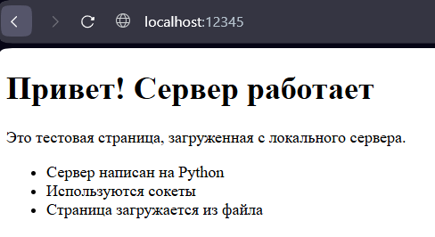
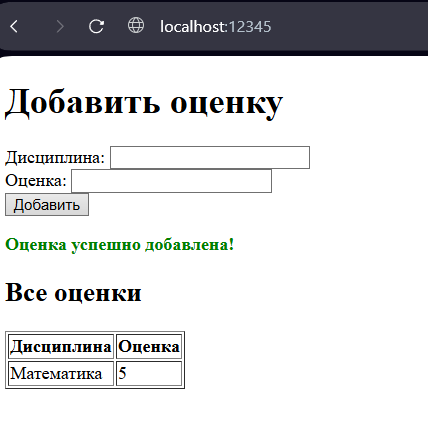

Отчет по лабораторной работе №1
Выполнил: Христофоров Владислав Николаевич, K3340, WEB 2.3
Задание 1: Клиент-серверное приложение (UDP)
Описание задания
Реализовать клиентскую и серверную часть приложения. Клиент отправляет серверу сообщение «Hello, server», и оно должно отобразиться на стороне сервера. В ответ сервер отправляет клиенту сообщение «Hello, client», которое должно отобразиться у клиента.
Краткое описание реализации
Разработаны UDP-сервер и UDP-клиент. Сервер ожидает датаграммы на определенном порту, а клиент отправляет датаграмму и ожидает ответ. Использован протокол UDP, который не требует установления соединения.
Код
Сервер (udp_server.py)
import socket
HOST = 'localhost'
PORT = 12345
BUFFER_SIZE = 1024
def main():
with socket.socket(socket.AF_INET, socket.SOCK_DGRAM) as s:
s.bind((HOST, PORT))
print(f"UDP сервер запущен на {HOST}:{PORT}")
try:
while True:
data, client_addr = s.recvfrom(BUFFER_SIZE)
print(f"Получены данные от {client_addr}: {data.decode('utf-8')}")
reply = "Hello, client!"
s.sendto(reply.encode('utf-8'), client_addr)
print(f"Отправлено сообщение '{reply}' клиенту {client_addr}")
except KeyboardInterrupt:
print("UDP сервер остановлен")
if __name__ == "__main__":
main()
Клиент (udp_client.py)
import socket
HOST = 'localhost'
PORT = 12345
BUFFER_SIZE = 1024
def main():
with socket.socket(socket.AF_INET, socket.SOCK_DGRAM) as s:
s.settimeout(2.0)
try:
msg = "Hello, server!"
s.sendto(msg.encode('utf-8'), (HOST, PORT))
print(f"Отправлено сообщение '{msg}' серверу {HOST}:{PORT}")
data, address = s.recvfrom(BUFFER_SIZE)
print(f"Получен ответ от {address}: {data.decode('utf-8')}")
except ConnectionResetError:
print("Соединение разорвано")
except TimeoutError:
print("Нет ответа от сервера")
if __name__ == "__main__":
main()
Пояснение
Ключевые элементы кода и их назначение:
# Создание UDP-сокета
socket.socket(socket.AF_INET, socket.SOCK_DGRAM)
socket.AF_INET- использование IPv4 адресацииsocket.SOCK_DGRAM- указание на протокол UDP (датаграммы)
# Сервер привязывается к порту для получения сообщений
s.bind((HOST, PORT))
# Получение данных и адреса отправителя
data, client_addr = s.recvfrom(BUFFER_SIZE)
recvfrom()возвращает как данные, так и адрес отправителя- Это позволяет ответить конкретному клиенту
# Отправка ответа конкретному адресу
s.sendto(reply.encode('utf-8'), client_addr)
- В UDP нет постоянного соединения, поэтому каждый раз указываем адрес получателя
Как это работает:
Сервер "слушает" на определенном порту. Когда приходит датаграмма, он извлекает данные и адрес отправителя, затем отправляет ответ на этот адрес. Клиент отправляет сообщение и ждет ответ на тот же сокет.
Примеры работы
Запуск сервера:
UDP сервер запущен на localhost:12345
Получены данные от ('127.0.0.1', 51049): Hello, server!
Отправлено сообщение 'Hello, client!' клиенту ('127.0.0.1', 51049)
Запуск клиента:
Отправлено сообщение 'Hello, server!' серверу localhost:12345
Получен ответ от ('127.0.0.1', 12345): Hello, client!
Задание 2: Клиент-серверное приложение (TCP) с математической операцией
Описание задания
Реализовать клиентскую и серверную часть приложения. Клиент запрашивает выполнение математической операции, параметры которой вводятся с клавиатуры. Сервер обрабатывает данные и возвращает результат клиенту.
Вариант 2: Решение квадратного уравнения.
Краткое описание реализации
Использован протокол TCP, который требует установления соединения. Сервер прослушивает порт, принимает соединения и обрабатывает каждое соединение. Реализована полная обработка квадратного уравнения с учетом всех особых случаев.
Код
Сервер (tcp_server.py)
from math import sqrt
import socket
HOST = 'localhost'
PORT = 12345
BUFFER_SIZE = 1024
def solve_equation(a, b, c):
if a == 0:
if b == 0:
if c == 0:
return "Уравнение имеет бесконечное количество решений"
else:
return "Уравнение не имеет решений"
else:
x = -c / b
return f"Это линейное уравнение. Корень: x = {x:.2f}"
D = b**2 - 4 * a * c
if D < 0:
return "У уравнения нет действительных корней"
elif D == 0:
x = -b / (2 * a)
return f"Уравнение имеет один корень: x = {x:.2f}"
else:
x_1 = (-b - sqrt(D)) / (2 * a)
x_2 = (-b + sqrt(D)) / (2 * a)
return f"Уравнение имеет два корня: x₁ = {x_1:.2f}, x₂ = {x_2:.2f}"
def main():
with socket.socket(socket.AF_INET, socket.SOCK_STREAM) as s:
s.setsockopt(socket.SOL_SOCKET, socket.SO_REUSEADDR, 1)
s.bind((HOST, PORT))
s.listen(5)
print(f"TCP сервер запущен на {HOST}:{PORT}")
while True:
try:
conn, client_addr = s.accept()
print(f"Соединение от {client_addr}")
with conn:
data = conn.recv(BUFFER_SIZE)
if not data:
continue
try:
values = data.decode("utf-8").split()
if len(values) != 3:
error_msg = "Ошибка: требуется 3 коэффициента (a b c)"
conn.sendall(error_msg.encode("utf-8"))
continue
a, b, c = map(float, values)
result = solve_equation(a, b, c)
conn.sendall(result.encode("utf-8"))
except ValueError:
error_msg = "Ошибка: все коэффициенты должны быть числами"
conn.sendall(error_msg.encode("utf-8"))
except Exception as e:
error_msg = f"Ошибка обработки: {str(e)}"
conn.sendall(error_msg.encode("utf-8"))
except KeyboardInterrupt:
print("Сервер остановлен")
break
except Exception as e:
print(f"Ошибка сервера: {e}")
continue
if __name__ == "__main__":
main()
Клиент (tcp_client.py)
import socket
HOST = 'localhost'
PORT = 12345
BUFFER_SIZE = 1024
def get_equation_coef(coef):
while True:
try:
value = input(coef).strip().replace(",", ".")
return float(value)
except ValueError:
print("Ошибка: введите число!")
def main():
print("Решение квадратного уравнения: ax² + bx + c = 0\n")
a = get_equation_coef("Введите коэффициент a: ")
b = get_equation_coef("Введите коэффициент b: ")
c = get_equation_coef("Введите коэффициент c: ")
with socket.socket(socket.AF_INET, socket.SOCK_STREAM) as s:
try:
s.settimeout(10.0)
s.connect((HOST, PORT))
message = f"{a} {b} {c}"
s.sendall(message.encode("utf-8"))
data = s.recv(BUFFER_SIZE)
response = data.decode("utf-8")
print(f"\nРезультат: {response}")
except ConnectionRefusedError:
print("Ошибка: не удалось подключиться к серверу")
except socket.timeout:
print("Ошибка: превышено время ожидания ответа от сервера")
except ConnectionResetError:
print("Ошибка: соединение было разорвано сервером")
except Exception as e:
print(f"Произошла ошибка: {e}")
if __name__ == "__main__":
main()
Пояснение
Ключевые элементы кода и их назначение:
# Создание TCP-сокета
socket.socket(socket.AF_INET, socket.SOCK_STREAM)
socket.SOCK_STREAM- указание на протокол TCP (потоковая передача)
# Сервер переходит в режим прослушивания
s.listen(5)
- Сервер готов принимать входящие соединения
- Число 5 - максимальная длина очереди ожидающих соединений
# Принятие входящего соединения
conn, client_addr = s.accept()
accept()блокирует выполнение до подключения клиента- Возвращает новый сокет
connдля общения с этим клиентом
# Клиент устанавливает соединение
s.connect((HOST, PORT))
- Клиент активно устанавливает соединение с сервером
# Надежная отправка всех данных
conn.sendall(result.encode("utf-8"))
sendall()гарантирует отправку всех данных, в отличие от send()
Примеры работы
Сервер:
TCP сервер запущен на localhost:12345
Соединение от ('127.0.0.1', 55140)
Клиент:
Решение квадратного уравнения: ax² + bx + c = 0
Введите коэффициент: a = 1
Введите коэффициент: b = -3
Введите коэффициент: c = 2
Результат: Уравнение имеет два корня: x₁ = 1.00, x₂ = 2.00
Задание 3: HTTP-сервер с загрузкой HTML-страницы
Описание задания
Реализовать серверную часть приложения. Клиент подключается к серверу, и в ответ получает HTTP-сообщение, содержащее HTML-страницу, которая сервер подгружает из файла index.html.
Краткое описание реализации
Создан простой HTTP-сервер, который читает HTML-файл и отправляет его с корректными HTTP-заголовками. Сервер обрабатывает GET-запросы и возвращает статическую HTML-страницу.
Код
Сервер (http_server.py)
import socket
import os
HOST = 'localhost'
PORT = 12345
BUFFER_SIZE = 1024
def main():
script_dir = os.path.dirname(os.path.abspath(__file__))
html_path = os.path.join(script_dir, "index.html")
if not os.path.exists(html_path):
print(f"Ошибка: файл {html_path} не найден")
return
with socket.socket(socket.AF_INET, socket.SOCK_STREAM) as s:
s.setsockopt(socket.SOL_SOCKET, socket.SO_REUSEADDR, 1)
s.bind((HOST, PORT))
s.listen(5)
print(f"Сервер запущен на {HOST}:{PORT}")
try:
while True:
conn, addr = s.accept()
with conn:
conn.recv(BUFFER_SIZE)
with open(html_path, 'r', encoding='utf-8') as f:
html_content = f.read()
response = (
"HTTP/1.1 200 OK\r\n"
"Content-Type: text/html; charset=utf-8\r\n"
f"Content-Length: {len(html_content.encode('utf-8'))}\r\n"
"\r\n"
f"{html_content}"
)
conn.sendall(response.encode('utf-8'))
print(f"Отправлена страница клиенту {addr[0]}")
except KeyboardInterrupt:
print("\nСервер остановлен")
if __name__ == "__main__":
main()
Файл index.html
<!DOCTYPE html>
<html>
<head>
<meta charset="UTF-8" />
<title>Простой сервер</title>
</head>
<body>
<h1>Привет! Сервер работает</h1>
<p>Это тестовая страница, загруженная с локального сервера.</p>
<ul>
<li>Сервер написан на Python</li>
<li>Используются сокеты</li>
<li>Страница загружается из файла</li>
</ul>
</body>
</html>
Пояснение
Ключевые элементы кода и их назначение:
# Определение пути к HTML-файлу
script_dir = os.path.dirname(os.path.abspath(__file__))
html_path = os.path.join(script_dir, "index.html")
- Получение абсолютного пути к файлу независимо от расположения скрипта
# Формирование HTTP-ответа
response = (
"HTTP/1.1 200 OK\r\n"
"Content-Type: text/html; charset=utf-8\r\n"
f"Content-Length: {len(html_content.encode('utf-8'))}\r\n"
"\r\n"
f"{html_content}"
)
HTTP/1.1 200 OK- строка статусаContent-Type- тип содержимого (HTML) и кодировкаContent-Length- размер содержимого в байтах- Пустая строка
\r\nразделяет заголовки и тело ответа html_content- собственно HTML-страница
# Чтение HTML-файла
with open(html_path, 'r', encoding='utf-8') as f:
html_content = f.read()
- Файл читается с указанием кодировки UTF-8 для корректного отображения русских символов
Примеры работы
Сервер:
Сервер запущен на localhost:12345
Отправлена страница клиенту 127.0.0.1
В браузере по адресу http://localhost:12345:

Задание 4: Многопользовательский чат
Описание задания
Реализовать двухпользовательский или многопользовательский чат. Для максимального количества баллов реализуйте многопользовательский чат
Краткое описание реализации
Разработаны сервер и клиенты с использованием потоков. Сервер обрабатывает каждого клиента в отдельном потоке, обеспечивает рассылку сообщений и управление списком подключенных пользователей.
Код
Сервер (chat_server.py)
import socket
import threading
HOST = "localhost"
PORT = 12345
clients = {}
lock = threading.Lock()
def broadcast(message, sender_conn=None):
"""Отправляет сообщение всем клиентам кроме отправителя"""
with lock:
clients_copy = clients.copy()
disconnected = []
for conn, nickname in clients_copy.items():
if conn != sender_conn:
try:
conn.send(f"{message}\n".encode())
except:
disconnected.append(conn)
if disconnected:
with lock:
for conn in disconnected:
if conn in clients:
del clients[conn]
def handle_client(conn, addr):
"""Обрабатывает подключение одного клиента"""
nickname = f"user_{addr[1]}"
try:
conn.send("Введите ваш никнейм: ".encode())
nickname_data = conn.recv(1024).decode().strip()
if nickname_data:
nickname = nickname_data
with lock:
clients[conn] = nickname
print(f"Клиент {nickname} подключился")
broadcast(f"{nickname} присоединился к чату!")
conn.send("Вы в чате! Команды: /list, /quit\n".encode())
while True:
message = conn.recv(1024).decode().strip()
if not message:
break
print(f"Получено от {nickname}: {message}")
if message == "/quit":
conn.send("До свидания!\n".encode())
print(f"Клиент {nickname} вышел по команде")
break
elif message == "/list":
with lock:
users = ", ".join(clients.values())
conn.send(f"Участники чата: {users}\n".encode())
else:
broadcast(f"{nickname}: {message}", conn)
except Exception as e:
print(f"Ошибка с клиентом {nickname}: {e}")
finally:
with lock:
if conn in clients:
del clients[conn]
print(f"Клиент {nickname} удален из списка")
broadcast(f"{nickname} покинул чат")
try:
conn.close()
except:
pass
def main():
with socket.socket(socket.AF_INET, socket.SOCK_STREAM) as server:
server.setsockopt(socket.SOL_SOCKET, socket.SO_REUSEADDR, 1)
server.bind((HOST, PORT))
server.listen()
print(f"Чат-сервер запущен на {HOST}:{PORT}")
try:
while True:
conn, addr = server.accept()
print(f"Новое подключение от {addr}")
thread = threading.Thread(target=handle_client, args=(conn, addr))
thread.daemon = True
thread.start()
except KeyboardInterrupt:
print("\nСервер остановлен")
except Exception as e:
print(f"Ошибка сервера: {e}")
if __name__ == "__main__":
main()
Клиент (chat_client.py)
import socket
import threading
import time
HOST = "localhost"
PORT = 12345
def receive_messages(sock):
"""Получает сообщения от сервера"""
while True:
try:
message = sock.recv(1024).decode()
if not message:
print("\nСервер закрыл соединение")
break
print(message, end="")
except:
break
def main():
try:
with socket.socket(socket.AF_INET, socket.SOCK_STREAM) as client:
client.connect((HOST, PORT))
receiver = threading.Thread(target=receive_messages, args=(client,))
receiver.daemon = True
receiver.start()
print("Подключение к чату установлено!")
try:
while True:
message = input()
if message.strip() == "/quit":
client.send(b"/quit\n")
time.sleep(0.1)
break
else:
client.send(f"{message}\n".encode())
except KeyboardInterrupt:
print("\nВыход из чата...")
client.send(b"/quit\n")
time.sleep(0.1)
except ConnectionRefusedError:
print("Не удалось подключиться к серверу")
except Exception as e:
print(f"Ошибка: {e}")
if __name__ == "__main__":
main()
Пояснение
Ключевые элементы кода и их назначение:
# Словарь для хранения подключенных клиентов
clients = {}
lock = threading.Lock()
clients- хранит соединения и соответствующие им никнеймыlock- обеспечивает потокобезопасность при работе с общими данными
# Функция рассылки сообщений
def broadcast(message, sender_conn=None):
with lock:
clients_copy = clients.copy()
for conn, nickname in clients_copy.items():
if conn != sender_conn:
try:
conn.send(f"{message}\n".encode())
except:
# Удаляем отключившегося клиента
pass
- Создается копия словаря клиентов для безопасности во время итерации
- Сообщение отправляется всем, кроме отправителя
- Обработка ошибок отправки (клиент отключился)
# Обработка клиента в отдельном потоке
def handle_client(conn, addr):
# Получение никнейма
conn.send("Введите ваш никнейм: ".encode())
nickname = conn.recv(1024).decode().strip()
# Добавление в список клиентов
with lock:
clients[conn] = nickname
# Основной цикл обработки сообщений
while True:
message = conn.recv(1024).decode().strip()
if not message or message == "/quit":
break
elif message == "/list":
# Отправка списка участников
pass
else:
# Рассылка сообщения всем
broadcast(f"{nickname}: {message}", conn)
# Запуск потока для каждого клиента
thread = threading.Thread(target=handle_client, args=(conn, addr))
thread.daemon = True
thread.start()
- Каждое новое соединение обрабатывается в отдельном потоке
daemon=Trueпозволяет потокам автоматически завершаться при остановке программы
Примеры работы
Сервер:
Чат-сервер запущен на localhost:12345
Клиент 1:
Подключение к чату установлено!
Введите ваш никнейм: Moon
Moon присоединился к чату!
Вы в чате! Команды: /list, /quit
Sun присоединился к чату!
Привет
Sun: Приветствую
November присоединился к чату!
November: Всем дарова
Ку
November покинул чат
Клиент 2:
Подключение к чату установлено!
Введите ваш никнейм: Sun
Sun присоединился к чату!
Вы в чате! Команды: /list, /quit
Moon: Привет
Приветствую
November присоединился к чату!
November: Всем дарова
Moon: Ку
November покинул чат
Клиент 3:
Подключение к чату установлено!
Введите ваш никнейм: November
November присоединился к чату!
Вы в чате! Команды: /list, /quit
Всем дарова
Moon: Ку
/list
Участники чата: Moon, Sun, November
/quit
До свидания!
Сервер закрыл соединение
Задание 5: Веб-сервер для обработки GET и POST запросов
Описание задания
Написать простой веб-сервер для обработки GET и POST HTTP-запросов с помощью библиотеки socket в Python.
Задание:
Сервер должен:
- Принять и записать информацию о дисциплине и оценке по дисциплине.
- Отдать информацию обо всех оценках по дисциплинам в виде HTML-страницы.
Краткое описание реализации
Реализован HTTP-сервер, обрабатывающий GET и POST запросы. При GET запросе возвращается форма для ввода данных и таблица существующих оценок. При POST запросе данные добавляются в хранилище и отображается обновленная страница.
Код
Сервер (get_post_server.py)
import socket
from urllib.parse import unquote_plus
HOST = "localhost"
PORT = 12345
grades = {}
def handle_request(conn):
"""Обрабатывает HTTP запрос"""
try:
request_data = b""
conn.settimeout(2.0)
# Сначала читаем заголовки
while b"\r\n\r\n" not in request_data:
chunk = conn.recv(4096)
if not chunk:
break
request_data += chunk
# Если это POST запрос, читаем тело до конца
if request_data.startswith(b"POST"):
headers = request_data.split(b"\r\n\r\n")[0]
content_length = 0
for line in headers.split(b"\r\n"):
if line.lower().startswith(b"content-length:"):
content_length = int(line.split(b":")[1].strip())
break
body_start = request_data.find(b"\r\n\r\n") + 4
current_body_length = len(request_data) - body_start
while current_body_length < content_length:
chunk = conn.recv(4096)
if not chunk:
break
request_data += chunk
current_body_length = len(request_data) - body_start
request = request_data.decode('utf-8', errors='ignore')
# Обрабатываем POST запрос
post_success = False
if request.startswith("POST") and "\r\n\r\n" in request:
body = request.split("\r\n\r\n", 1)[1]
parts = body.split("&")
subject = ""
grade = ""
for part in parts:
if part.startswith("subject="):
subject = unquote_plus(part[8:], encoding='utf-8')
elif part.startswith("grade="):
grade = unquote_plus(part[6:], encoding='utf-8')
if subject and grade:
grades[subject] = grade
post_success = True
print(f"Добавлена оценка: {subject} - {grade}")
# Генерируем HTML страницу
rows = ""
for subject, grade in grades.items():
rows += f"<tr><td>{subject}</td><td>{grade}</td></tr>"
success_msg = ""
if post_success:
success_msg = '<p style="color: green; font-weight: bold;">Оценка успешно добавлена!</p>'
html_content = f"""<!DOCTYPE html>
<html>
<head>
<meta charset="UTF-8">
<title>Оценки по дисциплинам</title>
</head>
<body>
<h1>Добавить оценку</h1>
<form method="POST">
Дисциплина: <input type="text" name="subject" required><br>
Оценка: <input type="text" name="grade" required><br>
<input type="submit" value="Добавить">
</form>
{success_msg}
<h2>Все оценки</h2>
<table border="1">
<tr><th>Дисциплина</th><th>Оценка</th></tr>
{rows}
</table>
</body>
</html>"""
# Формируем HTTP ответ
response = f"HTTP/1.1 200 OK\r\n"
response += "Content-Type: text/html; charset=utf-8\r\n"
response += f"Content-Length: {len(html_content.encode('utf-8'))}\r\n"
response += "\r\n"
response += html_content
conn.sendall(response.encode('utf-8'))
print("Ответ успешно отправлен")
except socket.timeout:
print("Таймаут при чтении запроса")
except Exception as e:
print(f"Ошибка: {e}")
finally:
conn.close()
def main():
"""Запускает сервер"""
with socket.socket(socket.AF_INET, socket.SOCK_STREAM) as server:
server.setsockopt(socket.SOL_SOCKET, socket.SO_REUSEADDR, 1)
server.bind((HOST, PORT))
server.listen(5)
print(f"Сервер запущен на http://{HOST}:{PORT}")
try:
while True:
conn, addr = server.accept()
print(f"Новое подключение от {addr[0]}:{addr[1]}")
handle_request(conn)
except KeyboardInterrupt:
print("\nСервер остановлен")
if __name__ == "__main__":
main()
Пояснение
Ключевые элементы кода и их назначение:
# Хранение данных об оценках
grades = {}
- Простое хранилище в оперативной памяти
# Обработка POST-запроса
if request.startswith("POST") and "\r\n\r\n" in request:
body = request.split("\r\n\r\n", 1)[1]
parts = body.split("&")
subject = ""
grade = ""
for part in parts:
if part.startswith("subject="):
subject = unquote_plus(part[8:], encoding='utf-8')
elif part.startswith("grade="):
grade = unquote_plus(part[6:], encoding='utf-8')
if subject and grade:
grades[subject] = grade
- Извлечение тела POST-запроса (после
\r\n\r\n) - Разбор данных формы в формате
application/x-www-form-urlencoded unquote_plus()- декодирование URL-encoded данных (пробелы как + и т.д.)- Сохранение данных в словарь
# Динамическая генерация HTML-таблицы
rows = ""
for subject, grade in grades.items():
rows += f"<tr><td>{subject}</td><td>{grade}</td></tr>"
- Создание HTML-строк таблицы на основе данных из словаря
- Каждая пара "дисциплина-оценка" становится строкой таблицы
# Форма для ввода данных
html_content = f"""
<form method="POST">
Дисциплина: <input type="text" name="subject" required>
Оценка: <input type="text" name="grade" required>
<input type="submit" value="Добавить">
</form>
<table border="1">
<tr><th>Дисциплина</th><th>Оценка</th></tr>
{rows}
</table>
"""
- HTML-форма с методом POST и обязательными полями
- Динамически вставляемая таблица с текущими оценками
- После отправки формы страница обновляется с новыми данными
Примеры работы
Сервер:
Сервер запущен на http://localhost:12345
В браузере по адресу http://localhost:12345:
- Отображается форма с полями "Дисциплина" и "Оценка"

- После ввода "Математика" и "5" и нажатия "Добавить"
- В таблице появляется строка "Математика - 5"

- При добавлении новой оценки таблица автоматически обновляется
Заключение
В результате выполнения лабораторной работы реализованы задания, демонстрирующие различные аспекты работы с сокетами:
- UDP - работа с датаграммами без установления соединения
- TCP - надежная передача данных с установлением соединения
- HTTP-сервер - обработка протокола прикладного уровня
- Многопоточный чат - одновременная работа с множеством клиентов
- GET/POST обработка - веб-формы и динамическое содержимое